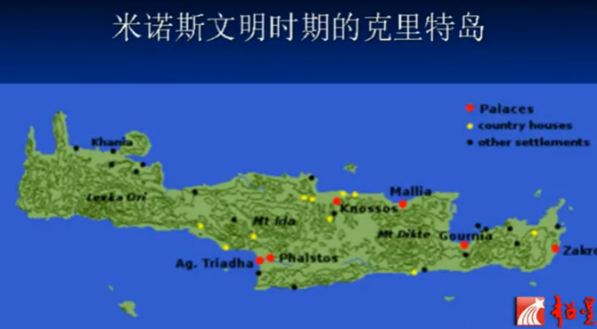
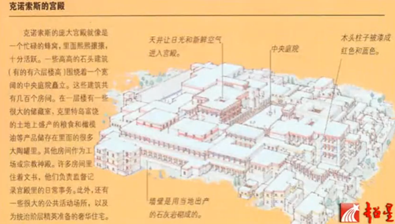
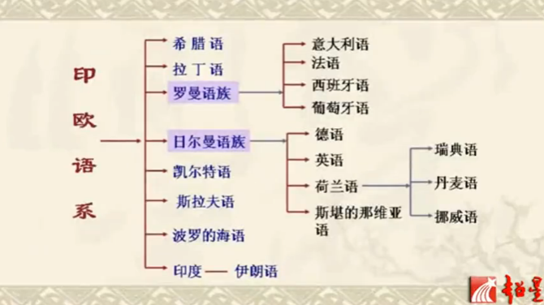
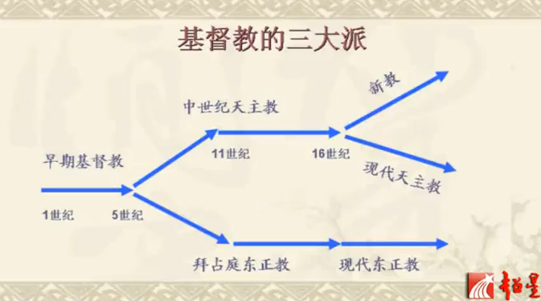
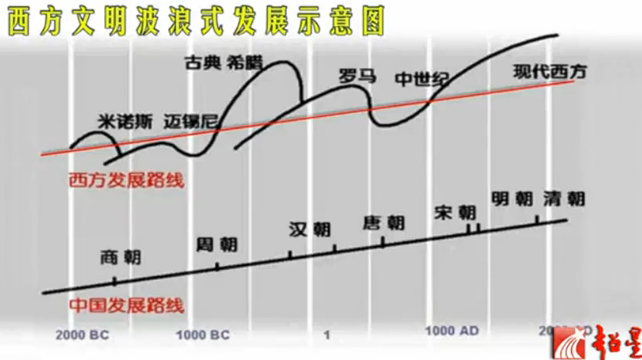

西方文明的形成与发展
中学学的是仅仅西方部分历史, 而西方文明史的线索更多, 内涵更广
西方文明的形成, 包含两个相互联系的过程
- 西方文化形成的客观过程
- 西方人对西方文明的认同过程

历史源头: 米- 迈文明
米诺斯文明的基地在克里特岛, 希腊半岛旁边的伯罗奔尼撒半岛则是迈锡尼文化的基地.
迈锡尼文明与古典希腊文明之间有些许断裂, 但前三者一般可以通称为希腊文明.
这两个阶段的文明长期在西方都只是一种传说, 都是以神话的形式来叙述的.
荷马史诗记载了迈锡尼文明, 大家普遍认为这是古人虚构的.
红点便是挖掘出米诺斯文明宫殿的地方


米诺斯宫殿复原图, 有成熟的设计, 有街道, 有楼房, 有晒太阳的天井, 有完全的上下水的设施和自来水, 有下水道, 连卫生间都是冲水的! 发达啊! 还有六层楼高的房子, 要知道北京到80年代初, 最高的楼房也就是七层楼(北京饭店), 而那时绝大多数中国县城只有三层楼.
在公元前20世纪, 米诺斯文明就达到了一个辉煌时期, 到公元前15世纪, 走向了衰落. 有一种说法是它北方的圣托里尼发生大规模的火山爆发, 导致几米高的海啸涌上克里特岛, 火山灰覆盖了克里特岛
西方文明的第一个黑暗时期: 古希腊的衰落(公元前 12 世纪~公元前 8 世纪)
19世纪有一位德国小孩, 叫谢里曼, 他过生日的时候, 他父母送了一本插图版的荷马史诗. 他读了之后坚信书中描述的都是真的, 而且立志要通过考古挖掘来证实迈锡尼文明的存在. 他家境贫寒, 14岁就辍学了, 之后便打工谋生经商, 但童年的梦想念念不忘. 他在业余时间学通了18门外语, 做了充分的准备, 等后来有钱了, 带着一笔钱财, 带着他的未婚妻来到了小亚细亚一处, 经考究发现这便是希腊联军攻打的特洛伊城, 还找到了特洛伊城遗址. 接下来他又来到了希腊联军故乡, 迈锡尼, 又挖掘出了联军故乡的文化遗址. 于是乎, 整个迈锡尼文明就重见天日了, 得到了考古挖掘的证实. 这是19世纪现代考古学创立时期的真正伟大的成就, 把西方文明史向前推进了七八百年. 谢里曼晚年还曾经想证实米诺斯文明, 但没来得及实现心愿. 后来一个英国年轻人伊文思(在一次讲座上受谢里曼启发), 在一个古董市场上看到了一个从克里特贩卖出去的文物, 便来到克里特岛进行考古挖掘, 结果就挖出了传说中的米诺斯王宫, 证实了米诺斯文明的存在, 把西方文明史又向前推进了几百年. 这已经是西方历史的极限了, 从此之后再没有更往前的推进. 当然西方还有一个传说, 亚特兰蒂斯, 又译作阿特兰蒂斯, 不过西方主流学者还是没承认其存在.
开山之石: 古希腊文明
相信一提起西方历史, 大家第一个想到的就会是古希腊.
城邦时代, 古希腊在雅典的领导下, 经过两次的波希战争取胜，并在前5世纪到前4世纪之间, 也就是在波希战争结束后至伯罗奔尼撒战争爆发前的这段时期达到鼎盛, 被称作”黄金时期”.
之后被马其顿国王征服后，希腊化文明在地中海西岸到中亚的大片地区扩散。
公元前4.5世纪, 古希腊文明开始走向衰落, 被它北方的马其顿城邦所征服. 公元前334年, 马其顿城邦的国王亚历山大(Alexander The Great)带着希腊联军开始了东征, 一直打到了印度河流域, 建立了庞大的, 横跨欧亚非三大洲的世界帝国, 亚历山大帝国. 他死后便迅速瓦解
继往开来: 古罗马文明
古罗马文明很大程度上是和古希腊文明在几百年当中相平行, 融合了古希腊文明.
狼来了 (罗马人的图腾, 传说母狼喂养了创建罗马的小孩), 把希腊及其周边都并入了它的版图. 历史上地中海周边出现过很多军事帝国, 但只有罗马帝国把整个地中海纳入版图之中.
直至4世纪末分裂为东西罗马. 罗马的分裂也伴随这宗教的分化, 东罗马形成了后来的东正教, 而西罗马形成了后来的天主教.
古罗马文明一分为二: 一个是在西罗马帝国基础上形成的中世纪基督教文明, 或者叫中世纪日耳曼的基督教文明, 然后到了中世纪末期, 随着新航路的开辟, 文艺复兴和宗教改革运动, 促使其成长为今天的现代西方文明. 而古罗马的另一部分, 就是在东罗马帝国的行政范围内, 形成了拜占庭文明, 虽然后来灭亡了, 但衍生了东正教文明.
在9世纪的时候, 拜占庭帝国派了两个传教士像俄罗斯人的祖先罗斯人传教, 便把基督教(东正教)传播到了斯拉夫人那里. 拜占庭帝国灭亡之后, 俄罗斯人就以东罗马帝国的直系传人自居, 自认莫斯科取代了君士坦丁堡(古拜占庭首都, 由奥斯曼帝国攻破), 成为东正教的中心.
我们中世纪俄国的皇帝叫沙皇, 沙皇的原意就是凯撒的意思. 而东罗马的那块土地, 后来基本上被伊斯兰教所占领, 而伊斯兰教产生的过程中, 吸收了大量犹太教和基督教的内容. 从伊斯兰教的古兰经就能发现, 其中的很多神话故事, 很多都直接源自圣经.
伊斯兰教承认犹太教和基督教的那些先知, 承认他们都是上帝派来的先知, 从亚布拉哈到耶稣, 但是默罕默德是最后一位最伟大的先知.
所以我们可以看出, 基督教承认犹太教的整个经典, 也承认犹太教的整个神的先知的谱系, 然后它说我们家的耶稣可是最后一位救世主. 而伊斯兰教接受了犹太教和基督教的全部, 但是它强调我们家的默罕默德才是最后一位先知啊.
不过从中也很容易感受到, 宗教是西方文明的摇篮
5世纪西罗马帝国开始衰落, 北方原始森林里涌出一波一波的日耳曼蛮族人, 摧毁了西罗马的文明, 也是西方又一次发生巨大的倒退, 又回到了原始时代末期和文明时期初期的水平.
西方第二个黑暗时代, 持续了约五百年(5-10世纪), 也就是中世纪的日耳曼基督教文明时期.
西罗马虽然倒下了, 但是西罗马孕育的基督教用信仰的力量征服了征服者, 使日耳曼人建立的王国相继皈依了基督教, 承认了教皇的最高权威. 在中世纪基督教代表着文化, 代表着教育, 代表这文明, 它是蛮族人慢慢变得有教养, 开化, 守礼. 这和中华文明被蛮族(XXX)征服有异曲同工之妙. 摧毁先进发达文明的总是落后的蛮族, 没文化是真的可怕.
公元800年法兰克国王之一查理加冕为皇帝, 仿佛是西罗马帝国的一次重生
政治边界, 军事边界往往是脆弱和短暂的, 文明边界是更有力的, 更长远的.(冷战时期的铁幕)
西方文明的亚文明
产生文明差异的因素
- 历史维度: 古希腊, 古罗马, 中世纪, 现代文明
- 空间维度: 北欧和南欧(比如从意大利进入法国, 德国, 那完全是两个世界), 欧洲大陆与英美(ASP白种人, 盎格鲁撒克逊人, 新教徒)
- 民族语言

- 宗教: 5世纪为罗马帝国分裂, 11世纪为日耳曼人入主西欧, 16世纪为宗教改革

欧洲的两条文化分界线
- 南北分界线: 天主教和新教分界线, 大体上就是罗马帝国的北部边界(罗马帝国天主教)
- 东西分界线: 西欧天主教(宗教改革后的新教和天主教)与东正教的分界线
(冷战时期东西方阵营分界线向东移了数百公里)
西方文明的特征
亨廷顿概括的八个特征
- 古典遗产, 强调了西方文明继承了古典文明
- 天主教和新教
- 欧洲语言
- 精神权威和世俗权威分离
- 法治
- 社会多元化
- 代议机构
- 个人主义, 内在的精神本质
西方文明的外在特征
- 宪政(法治与人权保障), 民主(代议制)
- 社会多元主义
- 发达的科学和技术
- 以私有财产为基础的市场经济
- 体现个性自由的文学和艺术
- 高水平的生产效率和高质量的生活水平
- 自由的生活方式和娱乐方式(很多现代娱乐方式就起源于西方, 奥运)
中国人可能是食谱最广的, 我们的祖先把能吃的东西都探索了个遍, 于是你会发现在欧洲很多我们习以为常的美味佳肴他们是不吃的, 其中包括动物内脏. 也从侧面反映欧洲人的祖先没怎么挨过饿
从历史发展角度看西方文明的特征
西方文明发展经过了独特的道路:
- 经历了
五起四落的波浪式发展过程, 多次毁灭与新生.(其中迈锡尼和中世纪时期(两段西方黑暗时期)西方的发展水平低于中国, 所以并非如我们老生常谈的那样, 中国在历史上一直领先, 只是近代的几百年落后了而已

- 经历了三次民族主题的转换和文明中心的位移(中华文明没有明显的中心位移, 以中原地区为中心不断向外辐射, 而西方文明更像是一场几个民族和城邦的接力赛. 而且几次都是当主导民族的文明达到辉煌再到衰老之后, 都是从原始森林里走出来了一支
野蛮民族来建立新的帝国政权.
题外话, 如果现代西方文明又衰落了, 在美国将是 墨西哥人和黑人
美国黑人目前占25%, 如今纽约白人已经是少数民族, 下一个是洛杉矶, 然后是整个美国. 预测到2050年美国的白人要成为少数民族
而在欧洲, 西欧将来是 穆斯林, 中东的移民
- 只有西方的现代文明是自然成长的, 而其他国家地区的现代文明是嫁接的, 是外来的.
换句话说, 西方文明很大程度上代表了当今的人类文明
西方文明的时空位移
从比较文化的角度看西方文明的特征
创新的理性思维方式:
特点:
- 清晰的理性(不模糊, 不胡蒙乱猜, 追求清晰性)
- 批判性思考和纠错机制(不盲从, 不断清理人类知识仓库中的赝品)
- 形而上的追求(要寻根问底)
- 求知求真求新的学术传统(不带功利目的; 尊重事实, 不受宗教和政权利益的干预; ; )
- 抽象思维与演绎推理的能力(希腊人是第一个在历史上将人类现有知识总结成科学体系的民族, 其他民族仅仅停留在会算, 是由经验而得来的技术)
表现:
- 哲学: 形而上的思考
- 科学, 技术: 批判理性的运用
- 社会领域: 指定规则的能力和更新组织, 制度的能力